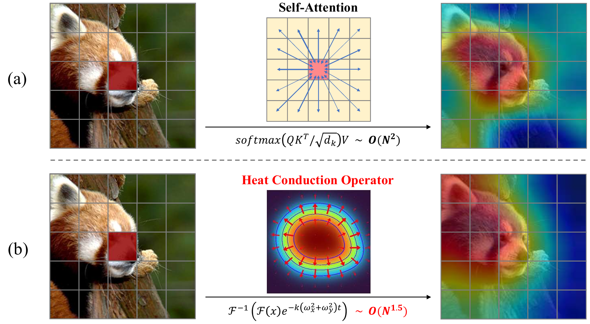

Baochen XiongPh.D. studentState Key Laboratory of Multimodal Artificial Intelligence Systems (MAIS) Institute of Automation, Chinese Academy of Sciences (CASIA) Beijing, China, 100190. Email: xiongbaochen2022@ia.ac.cn; Github: https://github.com/MightXiong; Google scholar: https://scholar.google.com |

|
I am a Ph.D. student at the State Key Laboratory of Multimodal Artificial Intelligence Systems (MAIS), Institute of Automation, Chinese Academy of Sciences, advised by Prof. Changsheng Xu and Prof. Xiaoshan Yang. I received my B.S. degree in Computer Science and Technology in June 2019, and my M.S. degree in Computer Technology in June 2022, both from Zhengzhou University.
My research interests include multimodal learning, federated learning, and distributed large models.
Publications
 |
Baochen Xiong, Xiaoshan Yang, Yaguang Song, Yaowei Wang, Changsheng Xu
Modality-Collaborative Test-Time Adaptation for Action Recognition Proceedings of the IEEE/CVF Conference on Computer Vision and Pattern Recognition, 2024 [Paper] |
 |
Baochen Xiong, Xiaoshan Yang, Yaguang Song, Yaowei Wang, Changsheng Xu
Pilot: Building the Federated Multimodal Instruction Tuning Framework Proceedings of the AAAI Conference on Artificial Intelligence, 2025 [Paper] [Code] |
 |
Baochen Xiong, Xiaoshan Yang, Yaguang Song, Yaowei Wang, Changsheng Xu
Client-adaptive cross-model reconstruction network for modality-incomplete multimodal federated learning (Oral) ACM MM, 2023 [Paper] |
 |
Xiaoshan Yang, Baochen Xiong, Yi Huang, Changsheng Xu
Cross-Modal Federated Human Activity Recognition via Modality-Agnostic and Modality-Specific Representation Learning Proceedings of the AAAI Conference on Artificial Intelligence, 2022 [Paper] [Code] |
|
Baochen Xiong, Xiaoshan Yang, Fan Qi, Changsheng Xu
A unified framework for multi-modal federated learning Neurocomputing, 2022 [Paper] [Code] |
|
Xiaoshan Yang, Baochen Xiong, Yi Huang, Changsheng Xu
Cross-modal federated human activity recognition Transactions on Pattern Analysis and Machine Intelligence (TPAMI), 2024 [Paper] |
Awards
Talent Development Scholarship, 2023.
Pengcheng Laboratory Director Scholarship, 2024.